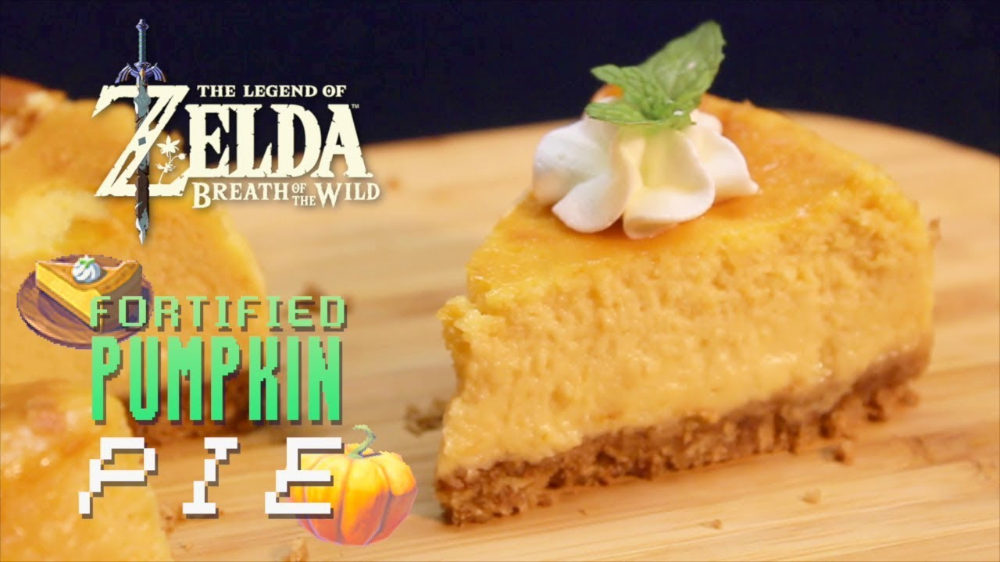

Pumpkin Pie

Description
This is a real life take of the Pumpkin Pie dish from Legend of Zelda: Breath
of the Wild.
Photo and recipe credit goes to
Jammy Cooks.
Ingredients
Crust
- 4 1/2 graham crackers rectangles
- 2 TBL butter
- 1/2 TBL sugar
- 1/3 tsp pumpkin spice
Filling
- 1 block cream cheese
- 2 eggs
- 1/2 cup sugar
- 1/3 cup pumpkin
- 1/2 cup heavy cream
- 1/4 cup greek yogurt
- 1/2 tsp vanilla
Steps
-
Wrap the bottom and the inside of a 6 inch springform pan with foil.
-
In a medium bowl, crush graham crackers to coarse crumbs. Combine with
sugar, butter and pumpkin spice.
-
Place mixture in bottom of a pan and press down with a potato masher or
glass cup. Set aside.
-
In a medium bowl, whisk cream cheese until soft. Whisk in yogurt and
sugar. Add eggs and pumpkin. Add vanilla and salt. Mix until smooth and
creamy. Carefully whisk in heavy cream until just combined.
- Add batter to prepared pan.
-
Bake at 350 degrees convection setting for 40-45 minutes or until
lightly brown on top and pie just barely jiggles.
-
Allow to cool for 30 minutes, then place in the fridge for 2 hours.
-
To serve, dip a knife in hot water. Wipe clean, then slice into 8
portions. Serve with whipped cream.